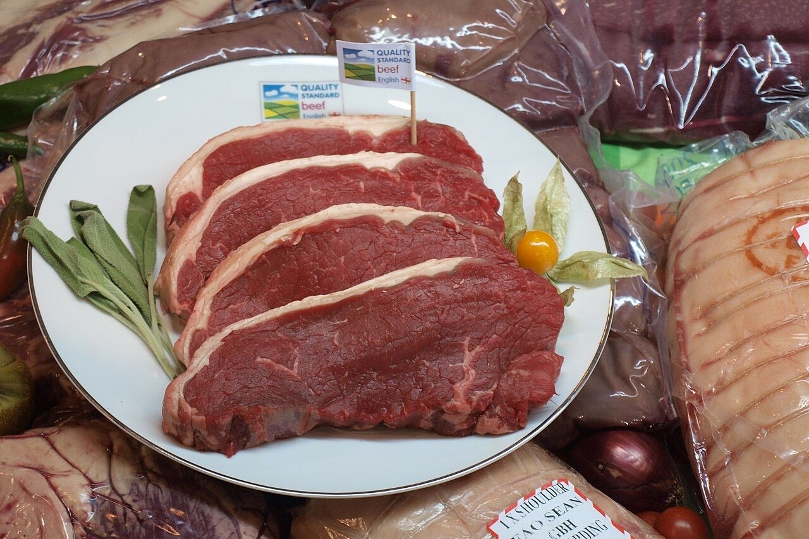
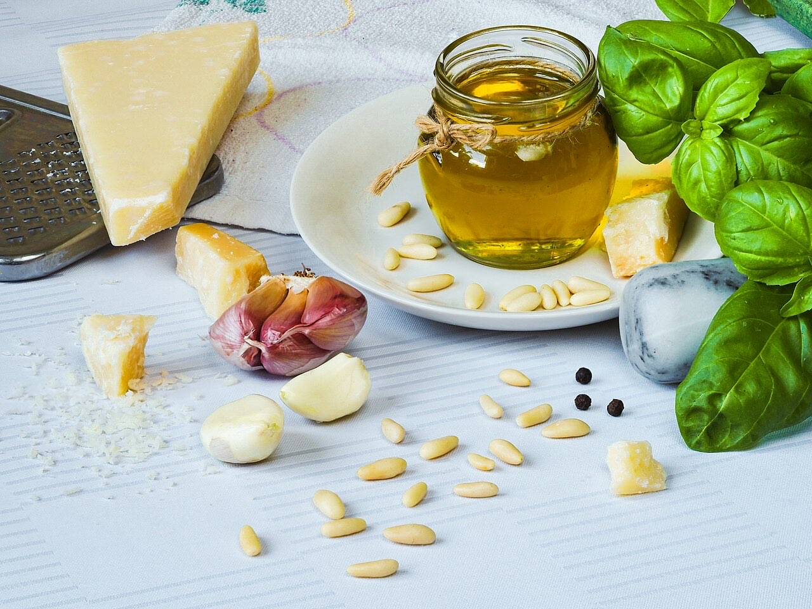

Fotografias ilustrativas — no site final usamos as vossas.
Envie a sua lista e combine o levantamento.
Tudo o que precisa para o dia a dia.
Rua Dona Maria Faria Ramos, São Torcato.
O Supermercados Cardoso fica na Rua Dona Maria Faria Ramos, em São Torcato. Faça a sua encomenda por WhatsApp e simplifique as compras da semana.


Fotografias ilustrativas — no site final usamos as vossas.
Encomenda
Diga o que precisa e quando quer levantar (ou receber). Respondemos por WhatsApp.
↑ Assim chegaria a mensagem ao vosso WhatsApp. (Nesta demonstração nada é enviado.)
Onde estamos
Proposta para Supermercados Cardoso
Esta página foi feita de propósito para Supermercados Cardoso por João Machado, programador web aqui de Guimarães. Inclui:
Eu trato do alojamento e da manutenção. Sem compromisso.